PRINCIPAL Funge com Carne Funge de carne seca com feijão de olho de palma, preparado com sabor tradicional.
PRINCIPAL Mufete Mufete preparado com ingredientes selecionados e o sabor tradicional da cozinha angolana.
Popular PRINCIPAL Hambúrguer Adonai Hambúrguer preparado com carne, queijo, vegetais e molho especial.
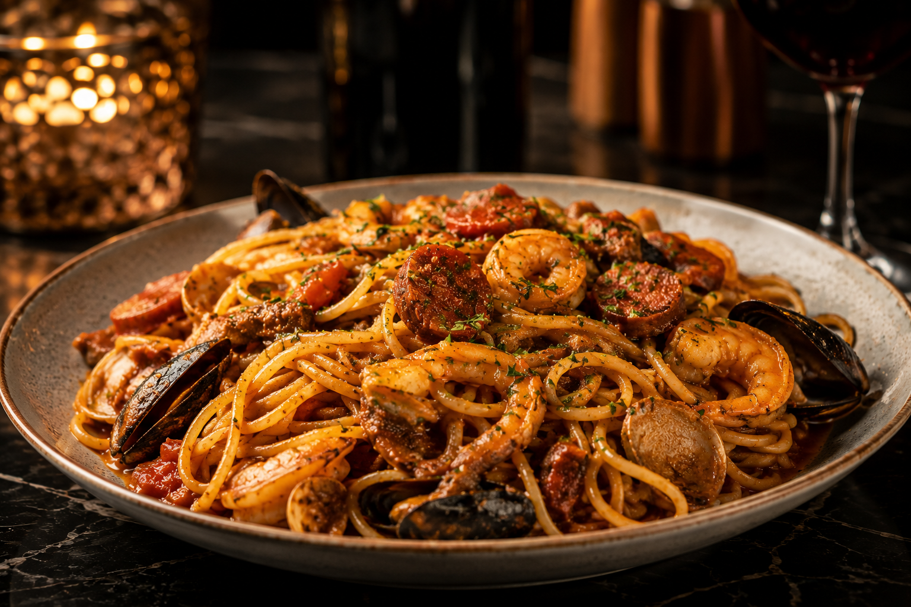 MASSAS Massa da Casa Massa preparada com todos os acompanhamentos e ingredientes da casa.
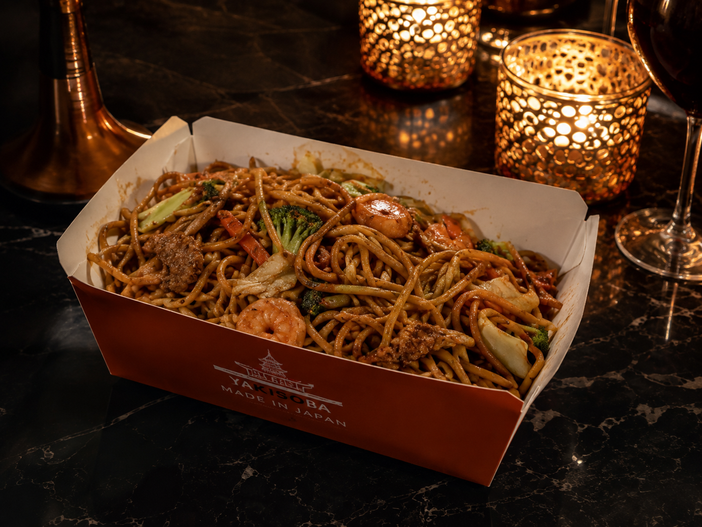 Especial MASSAS Massa Yakisoba A famosa massa Yakisoba preparada com ingredientes selecionados e molho especial.
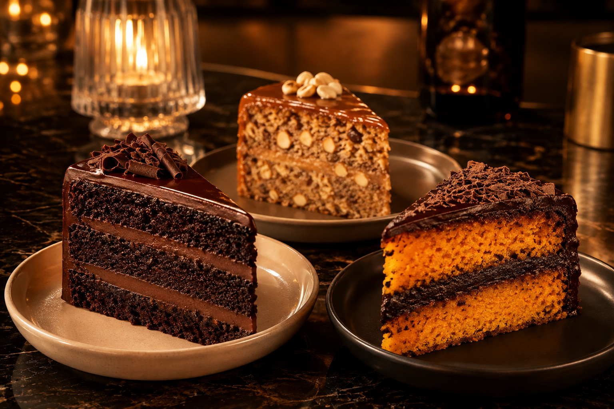 SOBREMESA Bolos Variados Vários pedaços de bolo disponíveis, incluindo chocolate, jinguba e cenoura com chocolate.
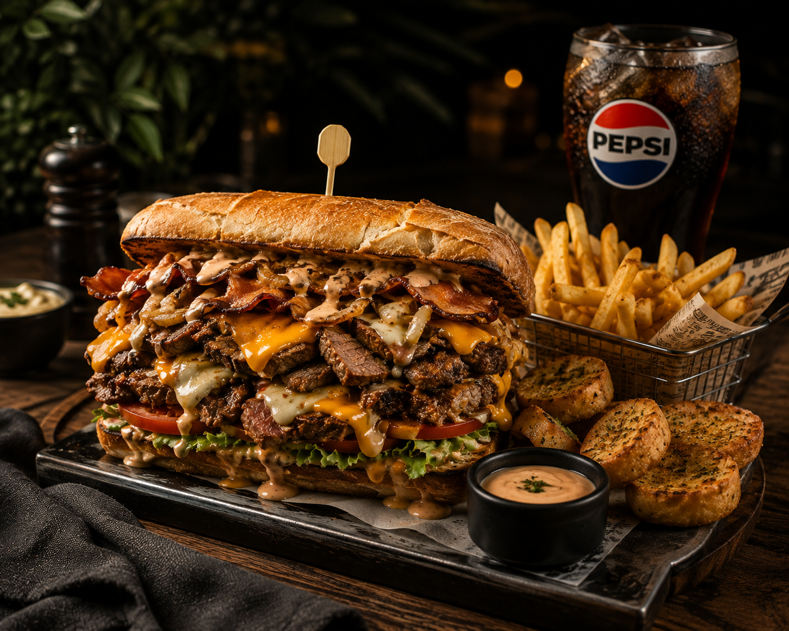 Especial ESPECIAL Sandes Louca A Sandes Louca da casa, com sabores generosos e o molho especial AVR.
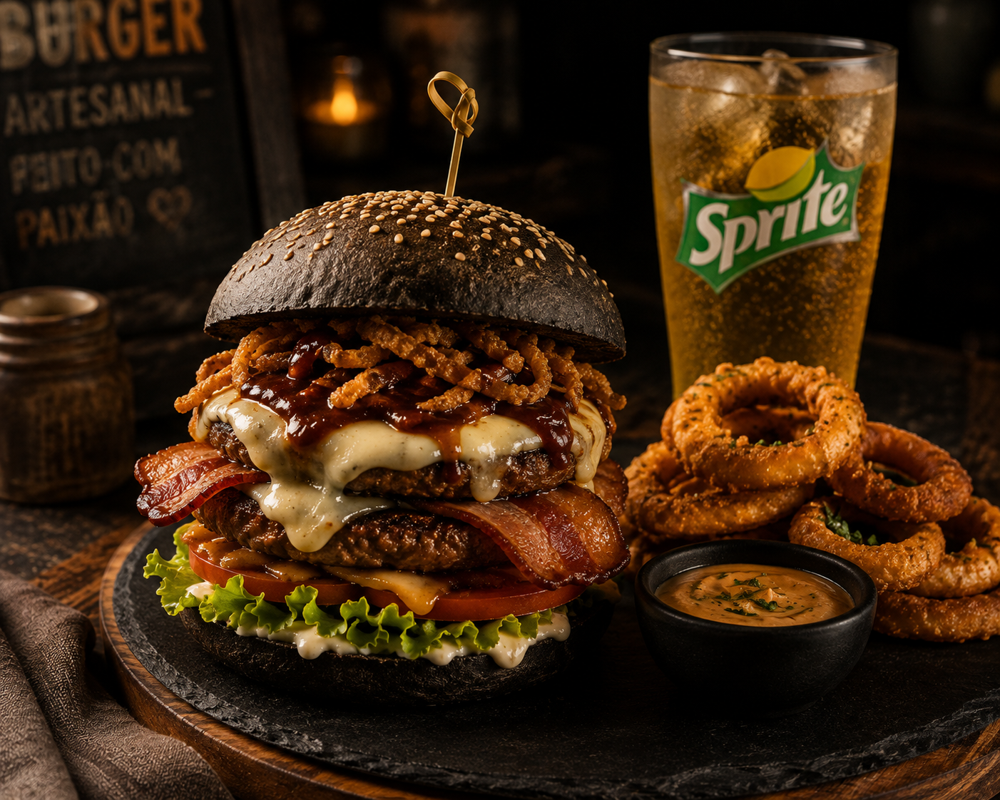 Especial HAMBÚRGUER Hambúrguer Mais Que Louco Hambúrguer com pão preto, carne, bacon e acompanhamentos especiais da casa.
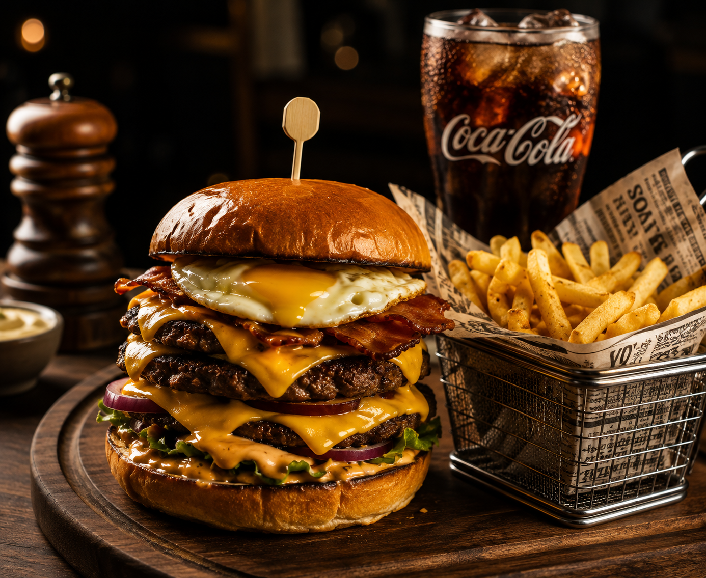 Especial HAMBÚRGUER Hambúrguer Louco Três carnes, ovo, bacon, queijo e acompanhamentos para uma experiência bem generosa.
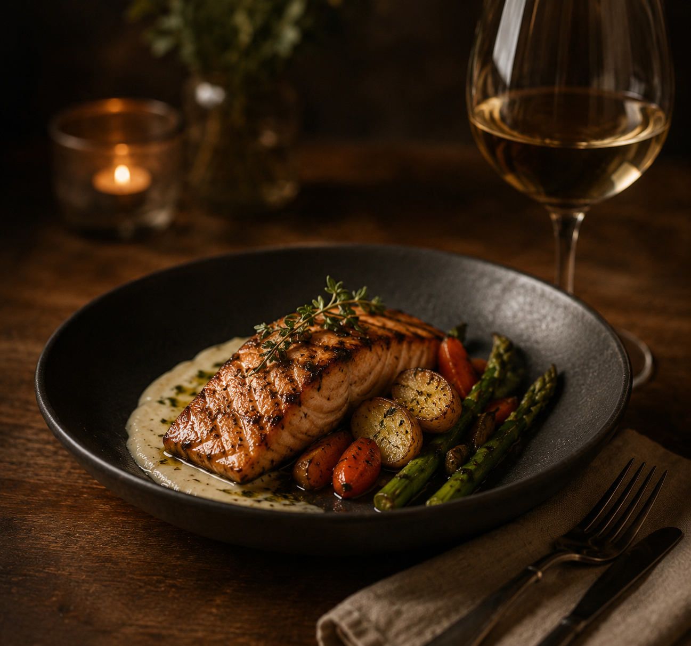 Especial ESPECIAL Filé com Legumes Filé preparado com legumes e acompanhado de vinho branco.
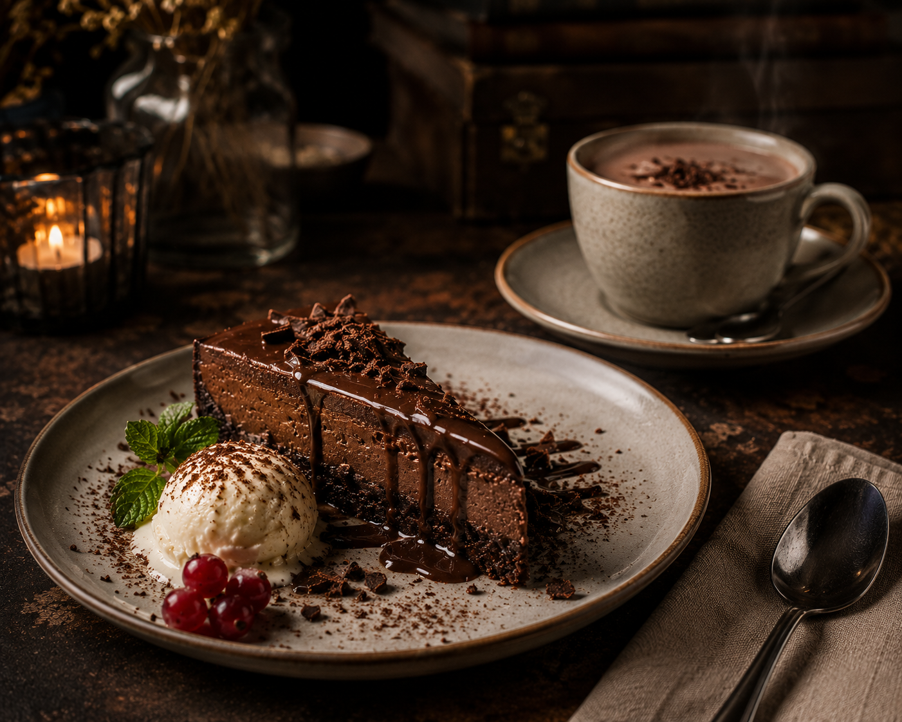 Especial SOBREMESA Cheesecake de Chocolate Cheesecake de chocolate com sorvete e chocolate quente.
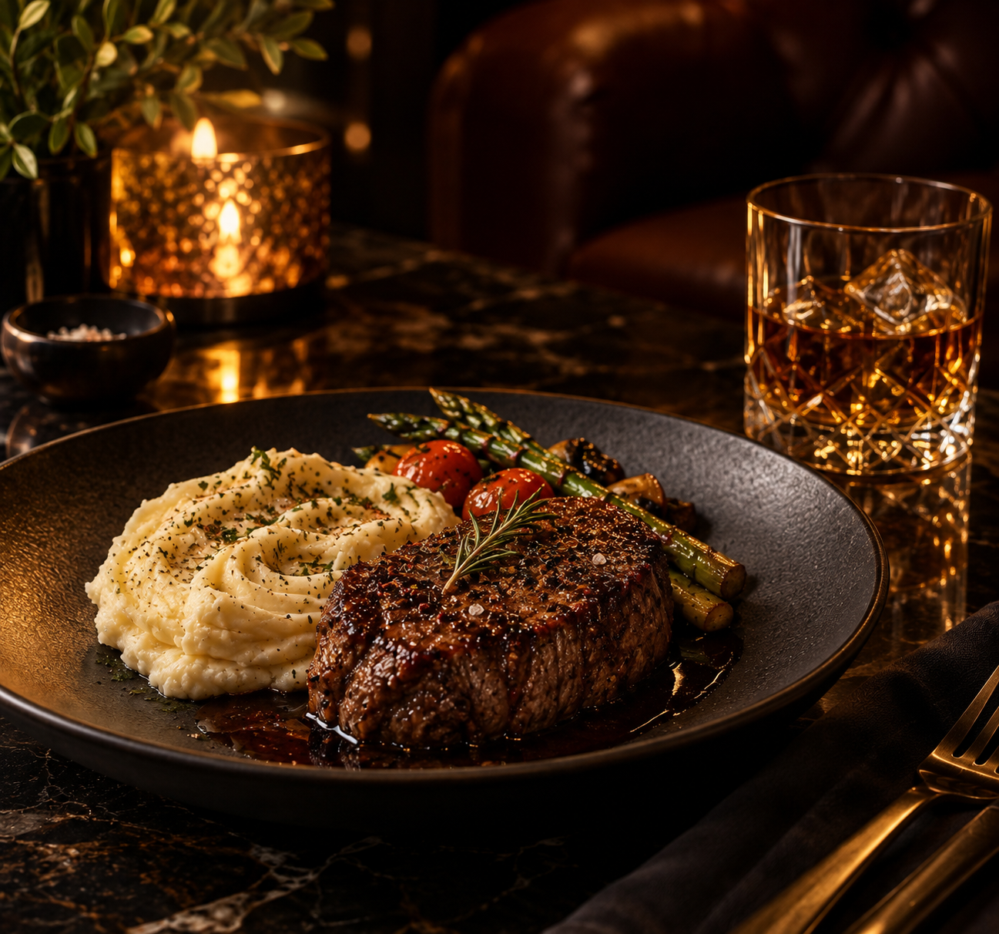 Especial ESPECIAL Carne com Puré Carne grelhada com puré e legumes, acompanhada de whisky.
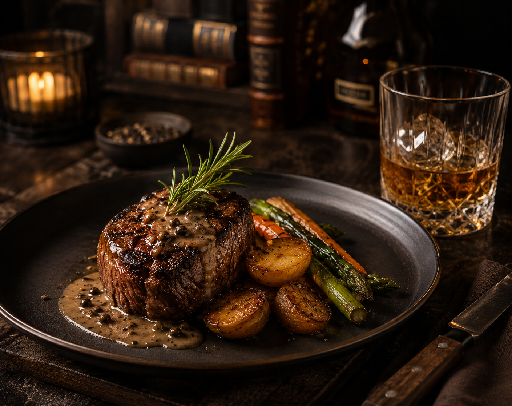 Especial ESPECIAL Carne Grelhada Especial Carne assada com molho especial e legumes, acompanhada de whisky.
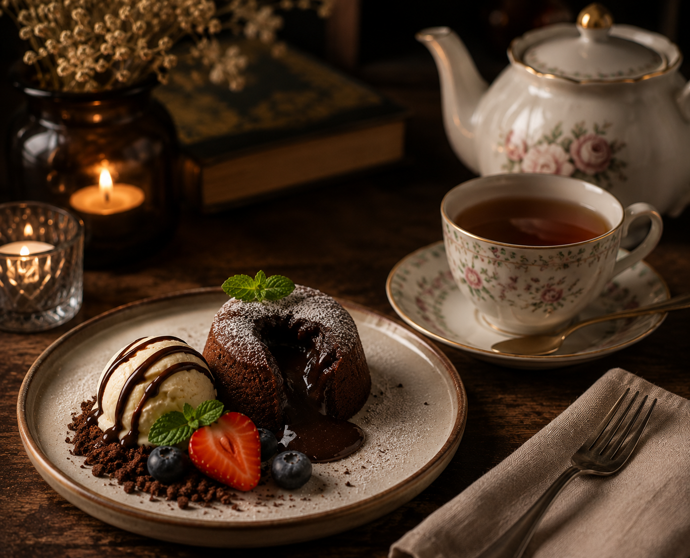 SOBREMESA Bolo com Sorvete Mini bolo de chocolate com sorvete e morango, acompanhado de chá.